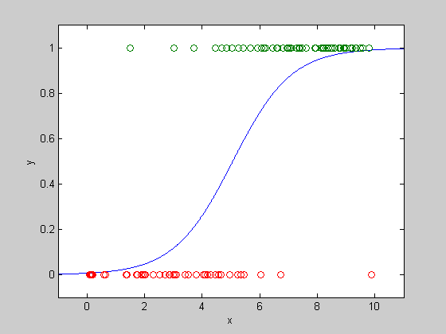

Logistic Regression Example
randn('state',0);
rand('state',0);
a = 1;
b = -5 ;
m= 100;
u = 10*rand(m,1);
y = (rand(m,1) < exp(a*u+b)./(1+exp(a*u+b)));
plot(u,y,'o')
axis([-1,11,-0.1, 1.1]);
U = [ones(m,1) u];
cvx_begin
variables x(2)
maximize(y'*U*x-sum(logsumexp_sdp([zeros(1,m); x'*U'])))
cvx_end
ind1 = find(y==1);
ind2 = find(y==0);
aml = x(2); bml = x(1);
us = linspace(-1,11,1000)';
ps = exp(aml*us + bml)./(1+exp(aml*us+bml));
dots = plot(us,ps,'-', u(ind1),y(ind1),'o',...
u(ind2),y(ind2),'o');
axis([-1, 11,-0.1,1.1]);
xlabel('x');
ylabel('y');
Calling SeDuMi: 1002 variables (2 free), 500 equality constraints
------------------------------------------------------------------------
SeDuMi 1.1 by AdvOL, 2005 and Jos F. Sturm, 1998, 2001-2003.
Alg = 2: xz-corrector, Adaptive Step-Differentiation, theta = 0.250, beta = 0.500
Split 2 free variables
eqs m = 500, order n = 705, dim = 1305, blocks = 101
nnz(A) = 1300 + 400, nnz(ADA) = 1700, nnz(L) = 1100
Handling 4 + 0 dense columns.
it : b*y gap delta rate t/tP* t/tD* feas cg cg prec
0 : 7.01E+000 0.000
1 : 6.59E+002 1.53E+000 0.000 0.2178 0.9000 0.9000 5.00 1 1 5.0E-001
2 : 3.36E+002 5.53E-001 0.000 0.3623 0.9000 0.9000 1.52 1 1 1.5E-001
3 : 1.41E+002 1.36E-001 0.000 0.2452 0.9000 0.9000 1.30 1 1 3.1E-002
4 : 6.60E+001 3.84E-002 0.000 0.2833 0.9000 0.9000 1.23 1 1 8.0E-003
5 : 4.40E+001 1.37E-002 0.000 0.3575 0.9000 0.9000 1.24 1 1 2.8E-003
6 : 3.60E+001 3.88E-003 0.000 0.2821 0.9000 0.9000 1.25 1 1 9.2E-004
7 : 3.38E+001 1.00E-003 0.000 0.2584 0.9000 0.9000 1.12 1 1 2.5E-004
8 : 3.33E+001 2.43E-004 0.000 0.2421 0.9000 0.9000 1.04 1 1 6.2E-005
9 : 3.33E+001 3.67E-009 0.000 0.0000 0.9000 0.0000 1.01 1 1 2.6E-005
10 : 3.32E+001 8.80E-010 0.000 0.2400 0.9168 0.9000 1.01 1 1 5.9E-006
11 : 3.31E+001 3.83E-011 0.000 0.0435 0.7548 0.9900 1.00 1 1 4.3E-007
12 : 3.31E+001 3.30E-013 0.000 0.0086 0.9990 0.9943 1.00 1 1 3.7E-009
iter seconds digits c*x b*y
12 0.5 Inf 3.3108168356e+001 3.3108168523e+001
|Ax-b| = 2.0e-008, [Ay-c]_+ = 1.4E-007, |x|= 2.9e+001, |y|= 2.0e+001
Detailed timing (sec)
Pre IPM Post
3.004E-002 5.308E-001 1.001E-002
Max-norms: ||b||=3.016052e+000, ||c|| = 1.207352e+002,
Cholesky |add|=0, |skip| = 0, ||L.L|| = 1.
------------------------------------------------------------------------
Status: Solved
Optimal value (cvx_optval): -33.1082
